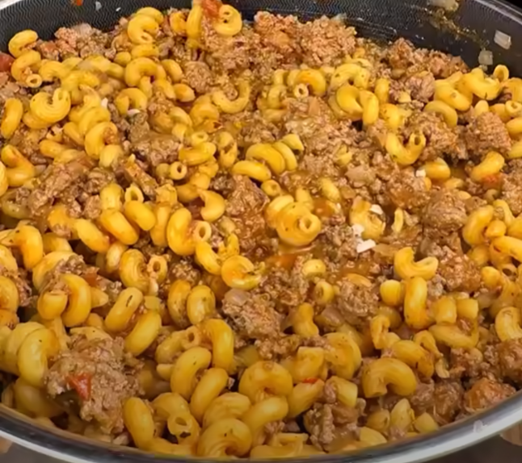

| Calories | Protein | Carbs | Fat | Fiber | Servings |
|---|---|---|---|---|---|
| 455 | 48g | 34g | 16g | 5g | 8 |
Dice & cook the onion, then add beef and cook through.
Separately, cook the pasta. Add bouillon to the water liberally when beginning to cook the noodles.
Add the seasoning, sauce, and pasta to the cooked beef and onion and mix it together well.
Riley's Stupid Recipes on Facebook